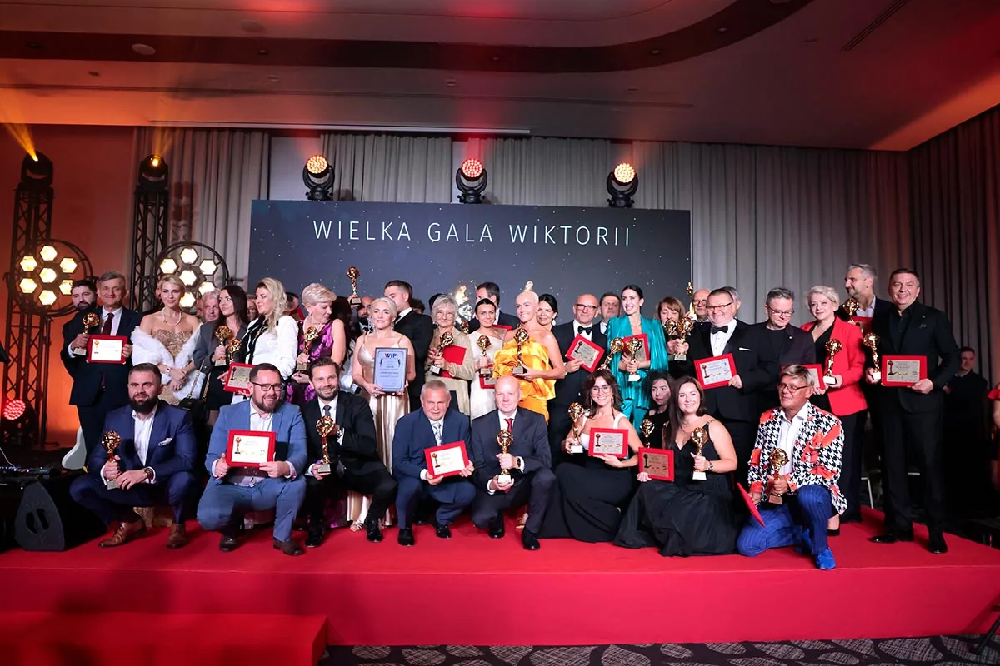
Strona główna / Partnerzy
Partnerzy i patroni
Firmy, urzędy i media, które wspierają konkurs WIKTORIA.
Partnerzy
Firmy, które wspierają konkurs i Wielką Galę. Pod logotypem lata współpracy według archiwum obecnej strony.
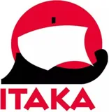
partner główny 2025- 2025, partner główny 2024
 2024-2025
2024-2025 2024-2025
2024-2025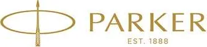
2024-2025 2024-2025
2024-2025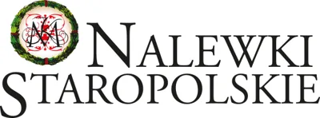
2024-2025- Grupa Deluxe2024-2025, partner główny 2023
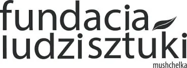
2024- Cytrynówka Świętokrzyska Cezary Grenda2024
- Partnerzy XXIX edycji 2026miejsce na listę od Fundacji
Patroni honorowi
Konkurs od lat odbywa się pod patronatem wojewodów i marszałków województw. XXIX edycję 2026 objął patronatem honorowym Wojewoda Mazowiecki Mariusz Frankowski.
 2024, 2025, 2026 (Mariusz Frankowski)
2024, 2025, 2026 (Mariusz Frankowski)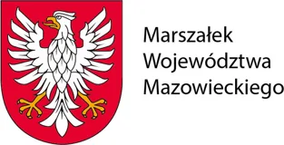
2024-2025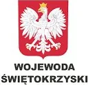
2024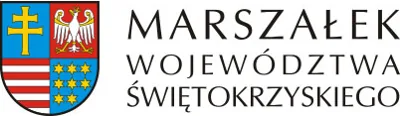
2024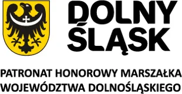
2024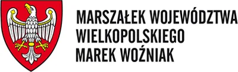
2024- Pozostali patroni 2026miejsce na materiał od Fundacji
Patroni medialni
Media, które informują o konkursie, nominacjach i wynikach.
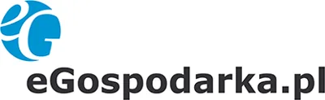
2024-2025 2024-2025
2024-2025 2024-2025
2024-2025 2024-2025
2024-2025 2025
2025- TV WIP2024
- Magazyn Pomorski2024
- Kultura Mody2024
- biznes2biznes.pl2024
- Patroni medialni 2026miejsce na materiał od Fundacji
Partnerstwo przy XXX edycji
W 2027 roku odbędzie się jubileuszowa, XXX edycja konkursu. Firmy i media, które chcą ją współtworzyć, zapraszamy do kontaktu z Biurem Promocji Konkursu.